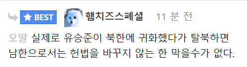

...이론상되는건가?
제미니 검색해보니 안된다고 하네
근데 그정도면 원래 안돼도 바꿔서 인정해줘야한다고 봐
저정도 하면 감히 어느누가 스티브에게 돌을 던질꺼야
제미니가 왜 안된대?
제미니 답변 요약하자면,
대한민국 헌법상 북한 주민은 대한민국 국민으로 간주되지만
외국 국적을 취득한 사람이 북한으로 들어간 경우 북한이탈주민(탈북민)으로 인정받지 못함
→ 대한민국 국적회복 및 확인절자 이용 못함.
→ 위장 탈북, 국가안보 위해 우려자로 분류
또한 무단 입북 자체가 범법 행위이며, 법무부 입국 금지조치가 유지
한국 국적 따는 방법인가
군대갈 용기도 없는새끼가 탈북할 용기는 있을까
심지어 튄 군대도 공익인데
그러니까 하면 인정해줘야지 ㅋㅋㅋㅋㅋㅋ
근데 저새끼 관광비자로는 된다며
안됨 한국 입국자체가 금지임
ㅗㅜㅑ
비자조건 이런거 다 상관없이 국가에서 저새끼 그냥 밴때린거임 ㅋㅋ 그냥 못들어옴
ㅈ되네
소송이고뭐 어쩌고 승소니지랄염병해도 출입국관리소에서 껒 ㅗ 하면 못들어옴 ㅋㅋㅋ
스티브 유의 입국 가능 여부에 대해 다양한 루머가 많이 퍼져있는데 종합적으로 정리하면
1. 비자 관련
-스티브 유는 미국 국적으로 한미간에 90일까지 관광 목적 무비자 입국이 허용되므로 단기 방문에는 아예 비자가 필요 없음
-스티브 유가 문제되는 것은 비자가 아니라 '입국허가'임. 둘은 서로 다름. 설사 비자가 있거나 무비자더라도 출입국관리소에서 외국인에 대하여 '입국거부'를 할 수 있으며, 외국인에 대한 입국 거부는 주권을 가진 국가의 주권 사항이라 어째서 입국이 거부되었는지에 대해 설명할 의무 조차 없음.
-입국 거부가 금지되는 경우는 내국인에 대한 입국거부일 경우임. 스티브 유는 국적이탈을 통해 미국 국적을 취득한 외국인(미국인)이므로 외국인에 대한 입국거부에 해당함
2. 관광이 아니라 돈을 벌고 싶어서 그렇다는데?
-입국 허가 부분에서 막히기 때문에 관광비자든 취업비자든 의미가 없는 상황
3. 예전에 승소한 건 뭐냐?
- 당시 스티브 유에 대해서 비자 발급 거부를 하면서 행정청이 절차를 어기고 부적법하게 거부한 적이 있었음. 그래서 행정소송에서 행정청이 패소함. 다만 패소했다고 해서 비자를 발급해줘야 하는 것은 아니고, 행정청이 절차적으로 위법한 처분으로 인한 행정소송에서 패소할 경우 행정청은 적법한 절차를 밟아 다시 거부할 수 있고, 실제로 담당 관청에서 절차를 밟아서 다시 거부했음(스티브 유 비자발급 관련은 공무원 행정법 과목에서 아주 중요한 판례임)
4. 입국 시켜주고 군대 보내자
-나이가 이미 너무 많아서 불가능할 뿐더러, 국적회복에 관한 법률에 국적회복을 허가해서는 안되는 사항에 병역 면탈을 위해 국적을 이탈한 경우가 떡하니 박혀버림. 법에서는 '하지 않을 수 있다' 랑 '해서는 안된다'의 의미가 크게 다른데, 하지 않을 수 있다의 경우 해줄수도 있다는 의미가 됨. 하지만 해서는 안된다 라고 박혀버리면 무조건 거부해야하고 허가해줄경우 위법한 행정행위가 됨.
-스티브 유는 병역 면탈을 위해 국적을 이탈한 경우에 해당하여 국적회복이 법적으로 불가능함.
미운털 단단히 박혔구만
저지랄까지하면 ㅇㅈ ㅋㅋㅋㅋ
그정도해서 들어오면 ㅅㅂ 뮤직뱅크가서 팝핀댄스 춰도 인정이지
아주 좋은 선례를(?) 만들어가지고 ㅋㅋㅋ 죽기직전에야 올 수 있을까 싶음
이제 40대 이상이나 기억할텐데..
저쯤 하면 인정해주지않을까 ㅋㅋㅋ 군대 다녀온거랑 비교가 안될 리스크 일텐데ㅋㅋ
왜 못 막음? 입경자를 송환한 사례가 있음
정은이 머리를 들고 탈북하면???
전성기 시절 쌉가능
근데 저 정도면 ㅇㅈ해줄듯 ㅋㅋㅋㅋ
어 그러네. ㄷㄷ
저지랄해서 들어와도 유일하게 북한송환해줄듯
완전 돈세탁 이자너~~